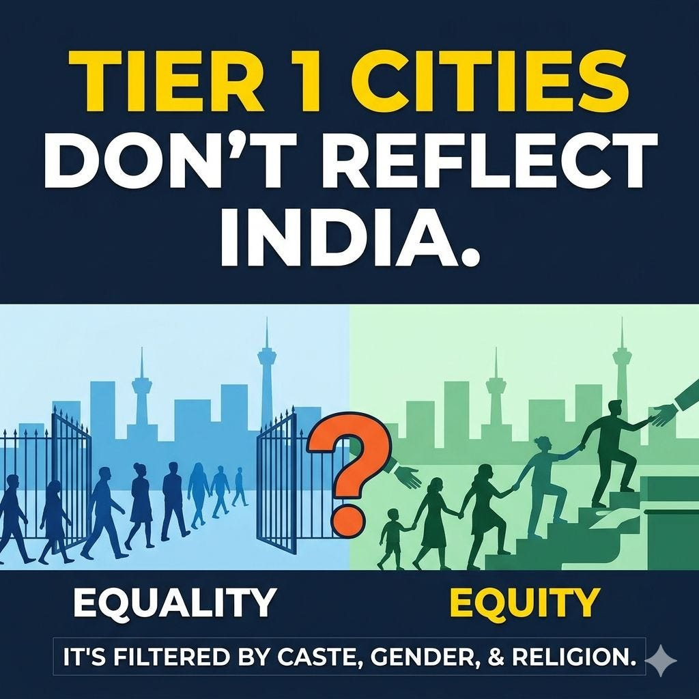
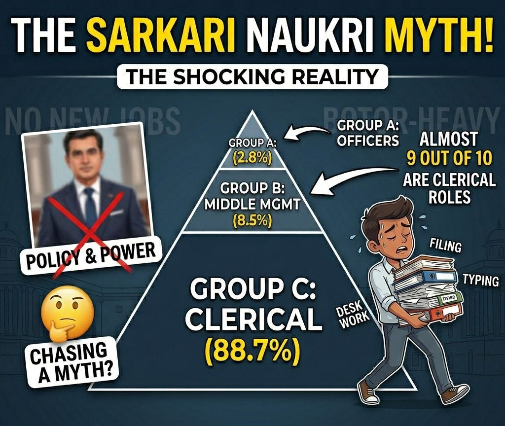
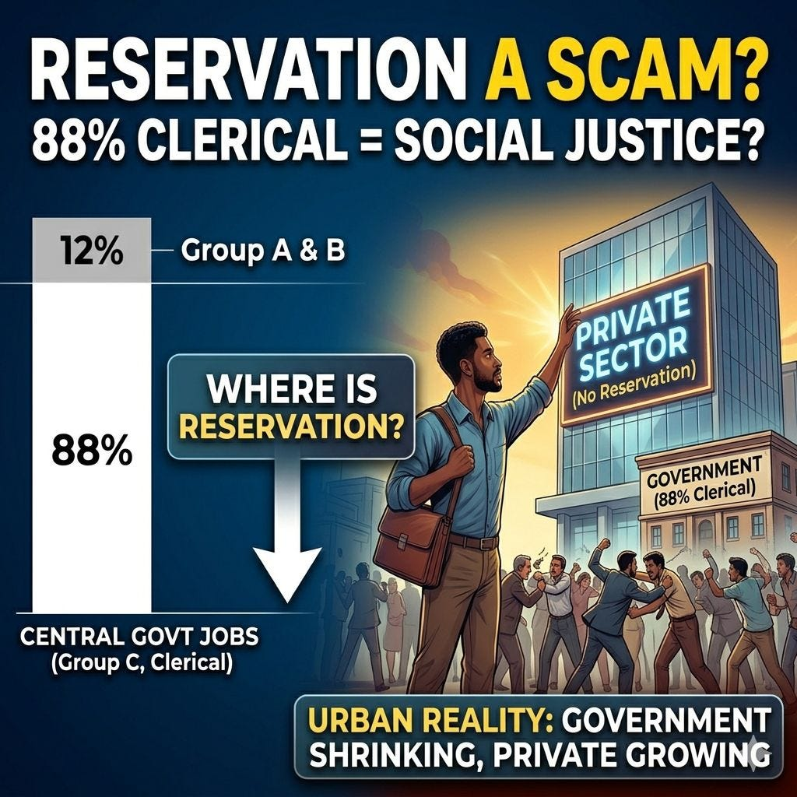

5. Invisibilisation of Inequality
EQUALITY vs EQUITY

Tier 1 cities don't reflect India.
Who gets to live in Mumbai, Delhi, or Bengaluru isn't random. It's filtered by caste, gender, and religion.
Upper castes dominate. SC/ST are pushed out. Men far outnumber women. Muslims look "proportional" on paper - but only the upper caste among them (Ashraf) actually make it. The Pasmandas majority is invisible.
So what does this have to do with equality and equity?
Equality says: "Everyone can move to a city if they work hard."
Equity says: "Did everyone even start from the same place?"
The data says no.
If a family has never sent a daughter to school… if your caste has been kept away from urban jobs for generations… if your community lacks basic access to higher education - telling everyone to "compete equally" for city opportunities isn't fair. It's just reproducing the same old hierarchy.
Equality without equity doesn't achieve social justice. It only hides injustice behind a veil of choice.
True inclusion means fixing who stays behind.
IMPORTANT COMMENTARY:-
- Yash - In Human History, MASS Migrations are ALMOST NEVER RANDOM, and current Urban Indian Tier 1 cities reflect the Brahmin Bania migration in the COLONIAL era.
- Sajal - Absolutely! Migration patterns depend on various factors such as social, economical and environmental .. this is well researched subject in population studies.
- Abhishek - Irony is that individual lying on bed in Delhi saying that religious tensions and casteism doesn't exist. Such people shall be launched through Agni missile 🚀 to fly off skies of Bihar and madhya Pradesh.
- Sajal - Yes .. invisibilisation of inequality exists in urban areas .. because people aren't exposed to ground realties
- Prashant - Every point made in this post is a lie and the funniest part is everyone reading it knows and feels this but they just can’t pin it down. That’s the gap such erudite folks fill in with their garbled rhetoric.
- Sajal - So you're challenging DATA? 😁
- Prashant - I believe in facts. Only someone who has no specifics hide behind the veil of “secondary sources of data”. Let me make it easier for you. For every point you made list out a single actual on ground example that can be independently verified by any one of us. Names places and incidents. Let’s then take this discussion forward constructively to see if I am wrong. If I am proved wrong even on one of the assertions made by you in your post I shall publicly acknowledge that and step away from LinkedIn permanently. Let’s start.
- Sajal - I'm the person who has migrated from tier 2 city to NCR and I've realised what structural barriers people face and why the workforce is not proportional to the actual demography. Females are severely underrepresented. So are the lower caste people (both in Hindus and Muslims). Why? Because not everyone can migrate to top tier cities (where the decent and formal jobs exist). Have you ever seen the contrast between different levels of cities with your own eyes? Or are you just living in an urban bubble? Wake up. 90% of Indian territory is living in poor conditions and poverty.
- Prashant - kid I have lived in almost all cities in the country. Don’t play this game of quoting your so called “experience”. One personal experience does not make policy. Let me bring you back to the primary line of this conversation…quote a single instance …let me go ahead and give you the freedom to quote your own experience. Name the flat owner/company you worked in with the name of the line manager who discriminated against you/ the educational institution where you were allegedly disregarded by a “upper caste” preference bias. Let’s not try and shift goalposts here. Facts first then engage.
- Sajal - What an insecure response uncle ji. 😁 I'm surprised that even after living in almost every city in this country (over 4000, I guess), you're unable to see the structural barriers people face. It isn't just about discrimination. The access is totally blocked. I come from the upper caste. My hometown is in a tier 2 city. Majority of the people have recently started to migrate and mostly from the upper castes. Why? Because they usually have connections in top tier cities (the same British colonial period ecosystem). Females and lower caste people still cannot. Because migration is not easy. Girls face safety problems and lower castes face financial and educational hurdles. Lower castes have struggled financially since the historic times because of the Brahmin-Baniya nexus. (This is a documented fact). People from tier 2/3 and rural areas face barriers .. and if they're female or come from lower caste/class, they're already out of the game.
- Prashant - as expected you had nothing other than your own prejudices fueling your post. Was expecting exactly this - another round of running around the bush. Please carry on living in that delusional world just remember not all on LinkedIn are mute spectators floating around. Stay blessed.
- Shankar - I guess then reservation sytem is not having any impact and should be removed as a failed policy and try something else?
PROBLEMS IN GOVT. JOBS

The dream for "Sarkari Naukri" is a myth.
India has 32.5 lakh central civilian employees.
Here’s the real hierarchy:
🔻 Group A (Officer) – 1.19 lakh (2.8%)
🔻 Group B (Middle) – 3.64 lakh (8.5%)
🔻 Group C (Clerical) – 27.7 lakh (88.7%)
Yes.
Almost 9 out of 10 central govt jobs are clerical or support roles.
Not policy-making. Not leadership. Filing. Typing. Desk work.
And yet, lakhs fight for years for these posts.
📉 Annual "new" jobs?
Almost none. What they call "new recruitment" is mostly replacing retirees.
📍 Where are the real officer jobs?
Delhi NCR. Secretariat. Ministries.
Rest of India? Mostly clerks and constables.
Conclusion -
If you’re chasing "sarkari naukri" for status or power ...
You’re running toward a bottom-heavy machine that doesn’t need more officers.
It needs more clerks.
IMPORTANT COMMENTARY:-
- Yash - Great #cfbr if an average person does GOVT job in Central GOVT for 20 years at Group A/B then it's roughly 20K jobs per year and only 10K jobs are reserved. Why this country is so obsessed with the question of reservation in central GOVT job if it's only 10K jobs per year. Why this country is so BAD at MATHS ?
- Nimi - Agreed… aspirant are chasing what it symbolises like stability, dignity, family approval and … most important predictability in an uncertain economy… harsh but reality.
- Anirwan - I was never interested in Government jobs from the very begining. Partly, seeing the pot bellied uncles who used to start from home at 10:00 in the morning to come back and play carrom with us at 17:00.I regarded Defense as a different job though. Appeared in NDA / CDSE without much luck.
- Sajal - Govt jobs are are overrated for no reason .. and even among them .. there is deep imbalance of attraction, geography and target people.
PRIVATISATION KILLED SOCIAL JUSTICE

You think reservation is a scam?
No. The scam is thinking 88% clerical jobs = social justice.
After economic reforms, India privatized its growth engine.
But reservation stayed stuck in government – a shrinking, bottom-heavy relic.
So here’s the reality today:
🔻 88% of central govt jobs are clerical (Group C)
🔻 Upper castes still hold \~70% of Group A officer posts
🔻 Private sector - where most new formal jobs are created - has zero reservation
Result?
Reserved category candidates fight for years…
…to get a clerical job in a system where real power stays upper-caste.
Meanwhile, the economy moved to the private sector.
Reservation didn't.
So tell me ..
Is this justice?
IMPORTANT COMMENTARY:-
- Shailesh - Reservation is just on headlines and nothing on ground , In this government alone reserved jobs are either kept vacant or used NFS and filled people from upper caste in mostly BJP ruled states , 30 lac jobs in central government have been kept vacant in the same government for unknown reasons , When would this country achieve equality if dominant classes or forces keep people out of reserved positions , Such injustice with majority of the population of this country from the 5-10% population only means it's definite scam or purposeful act , Only through equality and rightly timely constitutional rights execution of the suppressed classes can there be real upliftment and empowerment and later collectiveness representation participation inclusiveness be achieved otherwise it's just a great headline w/o implementation. And the worst part is it is prevalent till now after 75 years of independence in this 21st century unlike what was practiced 5000+ years from the same dominant class.
- Sajal - Class and caste are two separate parameters. One with higher class but with lower caste will face caste based discrimination and one with lower class but with higher caste will face financial hurdles .. though a lower caste person suffer more due to dehumanisation. Secondly, a person with both lower caste and class is at the bottom of the hierarchy and the person with both higher class and caste benefits the highest. Out of those 30 lakh central government jobs .. 90% jobs are clerical .. which is also dominated by privileged .. so in conclusion .. social justice is a scam,
- Rakesh - ALL the DATA will show you that EVERY GOVERNMENT has cheated the SC / SC / Dalits as far as employment is concerned. RESERVATIONS in India are a sham & vote gathering tool - thats it. The Biggest DEVILS are not the farzi High Caste - its our own MPs MLA's & Chief Ministers - who took our votes to WIN - but became high castes themselves the moment they WIN !!!
- Yash - biggest problem is "Nobody in reserved category cared about privatisation" which destroyed the reservation. Reservation without Socialism is a joke on social justice.
- Rakesh - Very true.But lets admit it - Socialism is dead. And we need to get over this SHAM mindset of government jobs.....stop chasing that illusion. Like it or not - Privatization is here to stay and we should join in ASAP. I know its not easy - but still better than wasting years preparing for the ever illusive 'GOVT JOBS"BTW:Government jobs constitute roughly 2% to 3.8% of total employment in India !!!WAKE UP PEOPLE !!
- Manjit - After independence, there is no data of caste census. Once it is conducted, everything will be crystal clear.
- Yash - we have good amount of estimates but people never bother to see basic DATA because the epistemology is Brahminical, regardless of Caste, the thinking pattern is Brahminical due to Sanskritisation (MS Srinivas) where people don't believe in counting things in material world, lots of things written on Wikipedia and open source and can be understood with decent social science education. Another question could be "Why our intellectual class is sleeping" 🙂
- Yash - Great #cfbr , the bogus reservation merit debate exists because nobody actually bothers to check the numbers". Ironically, many aspirants spent years in preparation without asking basic questions like "nature of jobs", "types of jobs" and their level and geographical locations.
- Sajal - Yes, when wrong questions are ruled out and right questions are asked, we could find better jobs for ourselves.
- Nimi - Correct… deeper issue is economic power shifted faster than social justice mechanisms did…. and that gap deserves far more honest discussion. 👏
- Santanu - What's preventing lower castes from qualifying for class A Government Jobs?
- Yash - haan haan .. sahi baat hai self created hi hai India ka partition kar do fir structural barrier sab khatam ho jaayenge .. kya kehte ho .. 93% of India ko alag kar do .. 7% of meritorious Urban India upper caste Hindu se .. tum log apna pakistan bna lo aur hamara peecha chhodo .. ya fir khud ko aryan declare kar do nazzi german wagera bankar apni party bana lo waise bhi ab tum minority ho jaaoge in next decade even in Urban India .. kyoki aadhi upper caste bhi apna paala badal legi .. fir tum aryan ban jaana .. hisaab chukaane ka tym paas aa raha hai ..
- Raychaudhuri - Reservation for the proletariat in private jobs leads to Communism and Rule of the Incompetent. Social Security should replace Reservation in both Govt and Private Sector. Free universal education, health, food....Jobs one must compete on Merit everywhere.
- Yash - reservation without socialism is a joke on social justice. Socialism isn't communism.
- Raychaudhuri - Social security is necessary....Reservation is a joke.
- Yash - social security can't be implemented without reservation.
- Raychaudhuri - Totally wrong and self serving corrupt philosophy. Social Security does not need reservation or affirmative action. Renamed MNREGA, Ayushman Bharat, Govt hospitals and schools are all social security without Reservation.....which needs to be time limited...and it is now time to cancel it after 75 years of Independence.
- Yash - the same thing happened in 1937 (invisibilisation of INEQUALITY) which lead to partition of India. Do you want to balkanise the Indian state ?
- Raychaudhuri - Nonsense.... Reservation had nothing to do with 1947...not 1937...that time Gandhi was conniving to get the lower caste vote and oust Netaji Subhas Chandra Bose . Ambedkar refused to call Gandhi Mahatma but he wanted separate reserved electorate for lower caste.. also for power...there were many faults in the Constitution that Ambedkar and so called upper caste Constituent Assembly wrote. Reservation was supposed to be time bound....so was the Dictatorial Soviet style Socialism of Netaji Subhas Chandra Bose. Reservation has become a mechanism for destroying merit and corruption today. Social security yes.... Reservation A Big No.
- Yash - In 1937 election Congress won all the votes and in 1940 Lahore resolution was passed. Sajal Garg dekh rahe ho bhai .. galat History k wjh se .. kitna bada nuksaan ho skta .. iss wjh se India me unity nhi h yehi log responsible h India ke downfall k liye 🙂 .. Partition ki story hmne hide kar di .. caste hatred me iss cheez ka kaafi big role h ..
- Sajal - hmm .. har aam aadmi andhkaar mein h .. ye sir sab kuch galt salt likh rhe h .. pehle to inko school history padhni hogi .. ambedkar ne ya kisi ne bhi constitution mein kya galt likh diya 🙂
- Yash - islee hi nationalism se start krwaya tha .. aise logo ki kami nhi h urban India or corporate me ..aur ye log nafrat bhar dete h baaki logo me
- Raychaudhuri - Wrong history being spread...
- Raychaudhuri - Years and years of Affirmative action for Brahmins followed by years of reservations even by the British who started the SC/ST listings....have made people entitled to the point that incompetence has risen like foam on the Yamuna river.
- Yash - incompetent to tab prove honge jab include honge .. population hi nahi hai .. bas 2.5 crore ST SC rehte hai Urban India top 20 cities me ..top 16.7 crore people .. to corporate me unki kya representation hogi .. abhi caste census karwa lo corporate me .. pta chal jaayega .. agar ho gayi census .. to corporate me bhi reservation aa jaayega ..
- Sajal - Incompetence to tum logo ke andar dikh rhi h jo sirf naam ke basis pe enter ho jaate ho workforce mein 😂😂 plus incompetence tum logo ke andar tabhi to desh kbhi aage ni badh paya .. konse area mein development hua h pehle ye batao
- Raychaudhuri - I never entered anywhere with name. We are Saha...in 1931 our caste was removed from SC/ST list but my grandfather was discriminated against by Sir Ashutosh Mukherji...VC of Calcutta University....yet even today his books are taught in Calcutta University....only merit...Meghnad Saha too was not allowed in Calcutta University by Sir Ashutosh Mukherji, father of Shymaprasad Mukherji...he had to relocate to Allahabad University and built a lab which produced all the nuclear physicists of our country including my uncle Prof. NK Saha who was the President of Indian Science Congress....no one in family was entitled....yet you people refuse to work hard and feel entitled to destroy this country with appointment of Incompetent persons by political goondagardi....I am quite aware of the nautanki of the Hyderabad University case.
- Aditya - Ah yes...LinkedIn “policy analysis” powered by a few cherry-picked stats.... Reservation was never meant to chase where jobs move...it exists to correct exclusion in state power...Even your own numbers admit 70% of Group A posts are still upper-caste dominated...So the issue isn’t reservation...it’s who still controls the top. And this “88% clerical jobs” point...? That’s just how bureaucracies are structured everywhere....broad base, narrow top. The real question is...who occupies the top layer? Clearly not proportionately. Now the trendy fix...private sector reservation 🥲. Sounds noble, but economically shaky... Private firms run on efficiency and competition...rigid quotas risk higher costs, lower productivity, and reduced investment. You don’t fix inequality by weakening the sector that actually creates jobs... Even studies by the Indian Institute of Dalit Studies show discrimination persists...but the answer is better education, skills, and enforcement, not blunt market distortions. So no, the scam isn’t reservation... The scam is oversimplifying a complex structural issue into a neat percentage thread and calling it insight...
- Yash - reservation without socialism is a joke on social justice.
- Mayank - 💯 reservation is the way to go
- Sajal - Plus we need to see what jobs are relevant to us .. by filtering out them according to market, geography and our access.
- Sachin - When you joined your organization, did you join as CEO, CFO. Noooooo. You joined as junior took experience and then got promoted. Similarly, what is stopping reserved category candidates from qualifying for Class A Government Jobs? You need to work hard. Reservation should be made a time bound process. It cannot go on in a blanket manner. There has to be sense of urgency else people will take it for granted. After every stage certain people who got education/jobs should be removed from the ambit of reservation and new people should be added.
- Sajal - reservation without Socialism is a joke on social justice. The main target is to destroy the caste groupings in the top and break Brahmin Baniya Nexus of Urban India so that economy becomes decentralised.
- Akshay - Reservation is a ticket to enter. Growth must be based on merit.
- Yash - ENTRY hi nahi ho rahi bhai .. kabhi census data nikaal kar dekho ..growth to bhai agle janam me hogi ..
- Ashish - Population-proportional redistribution of wealth is what is needed in India. What are your takes on this?
- Sajal - Yess, I very much agree .. because of capitalism and a combination of structural barriers .. wealth is now concentrated in fewer hands and couple of urban centres. Income distribution is much needed. But how it should be executed should be considered ... Though, on the other hand .. I would say .. if we could takle red tapism and corruption .. state support could lift people out of poverty much faster and with much justice.
- Upadhyay - If you open a company for profit, will you recruit based on Merit or based of reservation 🤡 if you really want socialism, then start begging on streets😂
- Sajal - Mix of both .. because merit and equity goes hand in hand .. that's what socialism is all about
- Rajiv - The affirmative action needs renaming from reservation to "proportinal share"..
- Sajal - Yes because reservation is usually framed as cutting opportunities for others .. but in reality it isn't .. because government jobs are tiny .. and private entries do heavy bias + structural barriers to enter matters